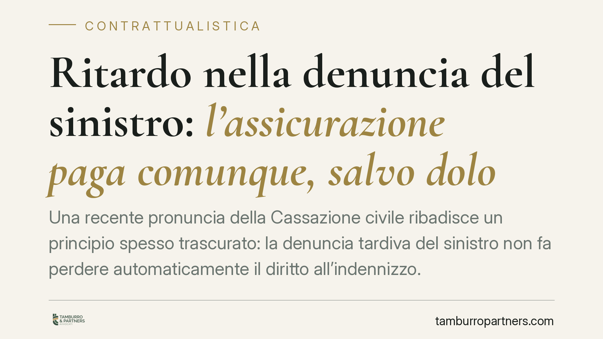

Ritardo nella denuncia del sinistro: l'assicurazione paga comunque, salvo dolo
Una recente pronuncia della Cassazione civile ribadisce un principio spesso trascurato: la denuncia tardiva del sinistro non fa perdere automaticamente il diritto all'indennizzo. La compagnia può ridurre o negare il pagamento solo dimostrando un comportamento doloso dell'assicurato. Un chiarimento che riequilibra il rapporto tra assicurato e assicuratore e incide su molte clausole contrattuali.

Il caso e il principio affermato
La Corte di Cassazione, Sezione III civile, è tornata sul tema della denuncia tardiva del sinistro. La questione riguarda un rapporto assicurativo in cui l'assicurato — nel caso esaminato, legato a un contesto di subappalto — aveva comunicato il sinistro alla compagnia oltre i termini previsti dalla polizza.
La compagnia aveva rifiutato il risarcimento invocando il ritardo. La Corte ha invece stabilito che il semplice ritardo non basta a far decadere il diritto all'indennizzo. Per sottrarsi al pagamento, l'assicuratore deve provare che l'assicurato abbia agito con dolo, cioè con la volontà consapevole di ostacolare gli accertamenti o di arrecare pregiudizio alla compagnia.
Inquadramento normativo
Il riferimento è duplice. L'articolo 1913 del Codice civile impone all'assicurato di dare avviso del sinistro all'assicuratore entro tre giorni da quando ne ha avuto conoscenza. È l'obbligo di denuncia.
L'articolo 1915 del Codice civile disciplina invece le conseguenze dell'inadempimento. Il primo comma prevede la perdita del diritto all'indennità solo quando l'assicurato ha *dolosamente* omesso di adempiere agli obblighi di avviso o di salvataggio. Il secondo comma stabilisce che, in caso di *colpa* — quindi negligenza, dimenticanza, ritardo non intenzionale — l'assicuratore può soltanto ridurre l'indennità in proporzione al danno effettivamente subito.
La distinzione è decisiva: dolo e colpa producono effetti radicalmente diversi. Solo il dolo giustifica la perdita totale del diritto. La colpa consente, al massimo, una riduzione, e comunque a condizione che l'assicuratore provi di aver subito un pregiudizio concreto dal ritardo.
Implicazioni pratiche
Molte polizze contengono clausole che collegano al ritardo nella denuncia la perdita automatica dell'indennizzo. La Cassazione chiarisce che tali clausole non possono aggirare l'impianto degli articoli 1913 e 1915. In assenza di dolo, il diritto al risarcimento resta.
Per l'assicurato questo significa che un ritardo dovuto a dimenticanza, difficoltà organizzative o ignoranza del termine non comporta la perdita del diritto. La compagnia dovrà dimostrare due elementi distinti: la volontà fraudolenta e, ove invochi la riduzione, il danno derivato dal ritardo.
Per le imprese — in particolare quelle che operano su cantieri complessi, con catene di subappalto e polizze articolate — l'inversione dell'onere probatorio è rilevante. Non è l'assicurato a dover giustificare il ritardo; è l'assicuratore a dover provare il dolo o il pregiudizio.
Resta però ferma la prudenza: la pronuncia non autorizza a trascurare i termini di denuncia. Il ritardo espone comunque a contenzioso, a possibili riduzioni dell'indennità e a un allungamento dei tempi di liquidazione.
Cosa fare in concreto
- Denunciate sempre il sinistro nei termini di polizza, anche quando il quadro dei danni non è ancora definito: una prima comunicazione tempestiva, seguita da integrazioni, tutela la posizione dell'assicurato.
- Documentate la data di conoscenza del sinistro. Il termine di tre giorni decorre da quando l'assicurato ne viene effettivamente a conoscenza, non dall'evento in sé.
- Verificate le clausole della polizza relative agli obblighi di avviso: se prevedono decadenze automatiche più rigide della legge, valutatene la compatibilità con l'art. 1915 c.c.
- In caso di rifiuto per denuncia tardiva, non date per persa la pretesa. Chiedete alla compagnia di indicare se contesta dolo o colpa e quale pregiudizio afferma di aver subito.
- Consigliamo di far esaminare la corrispondenza con l'assicuratore prima di accettare una riduzione o un diniego: la ripartizione dell'onere della prova è spesso a vantaggio dell'assicurato.
Conclusione
La pronuncia consolida un orientamento garantista. Il rapporto assicurativo si fonda sulla buona fede, non su decadenze meccaniche. Il ritardo, di per sé, non equivale a inadempimento sanzionabile con la perdita del diritto: serve la prova del dolo. Un principio che le imprese e i privati farebbero bene a conoscere prima di rassegnarsi a un diniego.
---
*Contributo informativo a cura di Tamburro & Partners - Avv. Giuseppe Tamburro. Non costituisce parere legale.*
Ogni contratto ha il suo equilibrio.
Se vuoi una revisione delle clausole o una redazione su misura, scrivi allo studio. Ti rispondiamo entro un giorno lavorativo.